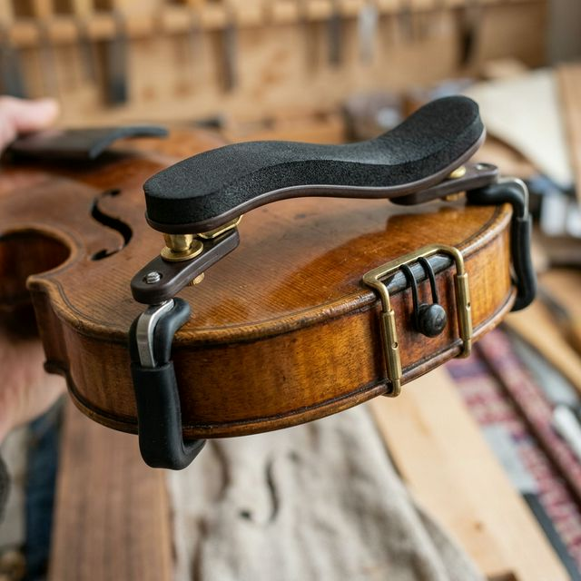
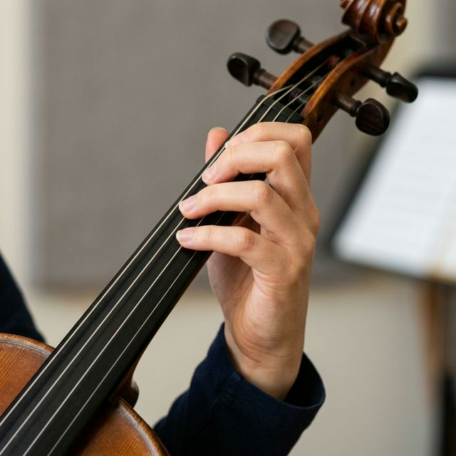

Curriculum Overview
This is a complete, structured mastery system spanning four levels — from absolute beginner to professional concert performer. Each level integrates violin technique with music theory, ear training, and deliberate practice methodology drawn from the world's finest conservatoires.
Work through each level sequentially. Do not rush to advance — mastery at each stage is the foundation of all future progress. The Galamian methodology emphasises that technical difficulties must be isolated, practised slowly, then gradually accelerated using a metronome in systematic rhythm variations.
- Daily practice is non-negotiable — even 30 focused minutes outperforms 2 hours of mindless repetition
- Record yourself weekly; the ear cannot hear what the mind is not trained to notice
- Integrate theory alongside technique — understanding what you play transforms muscle memory into musical intelligence
- Follow the Practice System tab for structured daily and weekly routines at every level
- Use the Ear Training module daily — 15 minutes minimum
- 🔊 Click any note box or fingerboard dot to hear the violin sound for that note
- Ivan Galamian — Principles of Violin Playing & Teaching
- Otakar Ševčík — Systematic bowing & finger exercises
- Rodolphe Kreutzer — 42 Etudes (the violinist's Bible)
- Shinichi Suzuki — Talent Education method
- Juilliard / Trinity — Curriculum structure
- Heinrich Schiff / Carl Courvoisier — Technical foundations
- Perform major violin concertos (Beethoven, Brahms, Sibelius)
- Sight-read orchestral parts at speed
- Understand and analyse any piece of tonal music
- Compose and harmonise original melodies
- Improvise over jazz/classical chord progressions
- Pass conservatory entrance auditions
Months 1–18 · Suzuki Books 1–2 · Sevcik Op.1 · Basic Music Theory
Setting Up: Instrument & Body

Shoulder Rest Holding Posture
Holding Posture

Left Hand PositionStep-by-Step Setup (Galamian Method)
- Shoulder rest: Attach and adjust so violin rests naturally on collarbone — no tension in the neck or jaw
- Chin rest: Left jaw rests on the chin rest — NOT the chin itself in most cases
- Left arm: Bring the violin up with the left arm supporting the scroll; the instrument should be roughly parallel to the floor
- Scroll direction: Point the scroll toward your left front corner (not directly to the side)
- Left thumb: Relaxed, slightly bent, touching the neck opposite the first finger — never gripping
- Fingers curved: All fingers approach the strings from above, with curved knuckles (as if holding a small ball)
Galamian Bow Grip
- Thumb: Curved, placed on the underside of the stick opposite the middle finger — never stiff
- Index finger: Rests on the stick at the middle joint (not the tip), angled toward the frog
- Middle & ring fingers: Draped naturally over the stick, evenly spaced
- Pinky: Curved and placed on top of the stick — acts as a counterbalance
- Wrist: Slightly flexible, never rigid
Common Errors
- Thumb straightening (locks the whole arm)
- Gripping with all fingers (prevents tone shaping)
- Collapsing pinky (lose control at the tip)
- Wrist too high or too stiff
The "Windshield Wiper" Warm-Up
Hold the bow at the balance point with your full bow grip. With the bow OFF the violin, practice slow full-arm swings from frog to tip and back. Focus only on maintaining the curved thumb and relaxed fingers. Do this 5 minutes daily for the first month before touching strings.
Finger Placement Drill (Sevcik Op.1, Part 1)
- Place all four fingers on the A string in first position: B–C#–D–E
- Lift each finger slowly, one at a time, keeping the others down
- Each finger should fall with a light "tap" — not a press
- The knuckles must remain visibly arched throughout
- Repeat on D, G, and E strings — 10 min per practice session
Open Strings & Tone Production
Contact Point (Sounding Point)
Draw the bow between the bridge and the fingerboard — approximately 2–4 cm from the bridge. Closer to the bridge = brighter, more projection. Closer to the fingerboard = softer, more hollow. This is called the sounding point or contact point.
Click to learn moreEvery element of violin tone depends on balancing three variables simultaneously:
- BOW SPEED Fast bow = louder, lighter tone
- BOW PRESSURE More weight = richer, fuller tone (use arm weight, not force)
- CONTACT PT. Distance from bridge (nearer = brighter)
Long Bow Exercise on Open Strings
- Use a full bow stroke on each open string: 4 slow counts DOWN, 4 counts UP
- Listen for a singing, clear, consistent tone — no scratching, no whistle
- Use arm weight (let gravity help you) — do not press with the hand
- Progress to 8-count strokes, then 12-count strokes
- Record yourself and compare the tone quality before and after
- Practice: 10 minutes daily, all 4 strings
First Position Mastery
Finger Independence Drill
- On the A string: place all four fingers down simultaneously (A-B-C#-D-E)
- Play each note with a separate bow stroke: open A, 1st finger B, 2nd finger C#, 3rd finger D, 4th finger E
- Repeat in reverse. Do not lift fingers when going up — only lift when coming back down
- Then use Sevcik Op.1 Book 1 patterns — practice each pattern 10 times before moving to the next
- Use metronome: start at ♩= 60, advance by 4 BPM per week
Level I — Theory Module
What Is a Staff?
A staff (also called a stave) is the grid that all written music sits on. It consists of 5 horizontal lines and the 4 spaces between them. Each line and space represents a different pitch — the higher up the staff, the higher the note sounds.
Note Values
| Symbol | Name | Beats (4/4) |
|---|---|---|
| 𝅝 | Whole note (semibreve) | 4 |
| 𝅗𝅥 | Half note (minim) | 2 |
| ♩ | Quarter note (crotchet) | 1 |
| ♪ | Eighth note (quaver) | ½ |
| 𝅘𝅥𝅯 | Sixteenth note (semiquaver) | ¼ |
Common Time Signatures
| Sig. | Beats/bar | Beat unit |
|---|---|---|
| 4/4 | 4 | Quarter note |
| 3/4 | 3 | Quarter note (waltz) |
| 2/4 | 2 | Quarter note (march) |
| 6/8 | 6 (felt as 2) | Eighth note |
| 12/8 | 12 (felt as 4) | Eighth note |
Major Scale Formula
Formula: W W H W W W H — Apply to any starting note. D major = D–E–F#–G–A–B–C#–D
G Major Scale
Level I — Quiz & Checkpoints
Daily Practice Routine — Level I
- 5 min Bow arm exercises (off string) — windshield wiper, wrist flexibility
- 10 min Long bow open strings — full bow strokes, tone listening
- 10 min Sevcik Op.1 finger exercises — all four strings
- 10 min One-octave D Major scale — ascending and descending, ♩=60
- 10 min One-octave A Major scale
- 10 min Current Suzuki piece — slow practice, one phrase at a time
- 5 min Music theory worksheet (staff reading, note naming)
Repertoire Path — Level I
| Piece | Composer | Book | Focus | Difficulty |
|---|---|---|---|---|
| Twinkle, Twinkle Variations | Suzuki arr. | Suzuki Vol.1 | Bow arm, rhythm, first notes | 1 |
| Song of the Wind | Suzuki | Suzuki Vol.1 | Slurs, 3rd finger | 1 |
| Minuet No.1 | Bach/Petzold | Suzuki Vol.1 | Musical phrasing, dynamics | 1 |
| Perpetual Motion | Suzuki | Suzuki Vol.1 | Finger speed, articulation | 2 |
| Hunters' Chorus | Weber | Suzuki Vol.2 | String crossing, détaché | 2 |
| Musette | Bach | Suzuki Vol.2 | D Major, 4th finger | 2 |
Years 2–4 · Suzuki Books 3–5 · Kreutzer 42 Études · Intermediate Harmony
Vibrato — Step-by-Step System
Vibrato is an oscillation of pitch produced by a rocking motion of the left hand. There are three types: arm vibrato, wrist vibrato, and finger vibrato. Galamian taught that the best vibrato combines all three, with the arm initiating the motion.
Stage 1: Arm Rocking (Weeks 1–2)
- Place the violin on your knee (not under chin) or on a table, scroll pointing away
- Place 2nd finger lightly on the A string at C#
- Rock the entire forearm forward and backward — from the elbow
- The finger should roll slightly (not slide) as the arm moves
- Goal: smooth, continuous wave — not nervous shaking
Stage 2: Under the Chin (Weeks 3–4)
- Transfer the arm-rocking motion to normal playing position
- Start on 2nd finger — it is the most stable
- Play a long open A, then switch to 2nd finger C# with vibrato
- Metronome: start at ♩=60, rocking twice per beat
- Progress to 3 rocks/beat, then 4, then free/musical
Shifting — Positions 1–7
The Galamian Shift
- Guide finger: Keep the shifting finger lightly on the string as you move — it "slides" the thumb and hand together
- Thumb leads: The thumb moves slightly before the fingers reach the new position
- No grip: Loosen the thumb and palm contact before shifting — never shift with tension
- Arrival note: The destination finger lands with a gentle placement, not a slam
- Practice slowly: Use the metronome at ♩=40 initially
Bowing Techniques — Expanded
Intermediate Theory Module
C (0) → F (1♭) → B♭ (2♭) → E♭ (3♭) → A♭ (4♭) → D♭ (5♭)
| Interval | Semitones | Example |
|---|---|---|
| Unison | 0 | C–C |
| Minor 2nd | 1 | C–D♭ |
| Major 2nd | 2 | C–D |
| Minor 3rd | 3 | C–E♭ |
| Major 3rd | 4 | C–E |
| Perfect 4th | 5 | C–F |
| Tritone | 6 | C–F# |
| Perfect 5th | 7 | C–G |
| Minor 6th | 8 | C–A♭ |
| Major 6th | 9 | C–A |
| Minor 7th | 10 | C–B♭ |
| Major 7th | 11 | C–B |
| Octave | 12 | C–C |
Triads
| Type | Formula | Sound |
|---|---|---|
| Major | Root + M3 + P5 | Bright, stable |
| Minor | Root + m3 + P5 | Dark, stable |
| Diminished | Root + m3 + d5 | Tense, unstable |
| Augmented | Root + M3 + A5 | Dreamy, unstable |
Seventh Chords
| Type | Formula |
|---|---|
| Major 7th | M + M3 + P5 + M7 |
| Dominant 7th | M + M3 + P5 + m7 |
| Minor 7th | m + m3 + P5 + m7 |
| Half-dim (ø7) | dim + m3 + d5 + m7 |
| Fully dim (°7) | dim + m3 + d5 + d7 |
Level II — Practice Routine
- 10 min Warm-up: open strings, long bows, bow arm flexibility
- 15 min Sevcik Op.2 — bowing variations on scales
- 20 min Two-octave scales in all keys (majors first, then minors)
- 20 min Shifting exercises — 1st↔3rd, 1st↔5th, 3rd↔7th
- 10 min Vibrato development — metronome rocking drill
- 20 min Kreutzer etude (one per week — rotate through 1–12)
- 30 min Current repertoire piece — phrase by phrase
- 15 min Double stops: thirds, sixths, octaves
- 15 min Sight-reading — new music, cold
- 15 min Music theory study / ear training
Repertoire Path — Level II
| Piece | Composer | Type | Focus | Diff. |
|---|---|---|---|---|
| Etude No.1 | Kreutzer | Étude | Détaché bow, evenness | 2 |
| Gavotte in D | Bach | Piece | Baroque style, 3rd position | 2 |
| Concertino in D | Rieding | Concerto | First concerto, musicality | 2 |
| Seitz Student Concerto No.2 | Seitz | Concerto | Multiple positions, bowing variety | 3 |
| Vivaldi Concerto in A minor | Vivaldi | Concerto | Baroque ornamentation, fast runs | 3 |
| Humoresque | Dvořák | Piece | Lyrical phrasing, vibrato | 2 |
Years 4–7 · Dont Op.35 · Galamian Scale System · Voice Leading & Counterpoint
Advanced Bowing — Off-String Techniques
Finding the Spiccato Point
- Hold the bow in the air at the balance point (roughly middle-lower)
- Tap the bow on the A string — it will bounce naturally
- That bounce point is your spiccato zone (varies per bow)
- To control: a smaller arm motion = smaller, controlled bounce
- Never force the bounce — let gravity do the work
Sautillé (Advanced)
A faster, smaller spiccato where the bow barely leaves the string. Occurs naturally at high bow speeds. Not controlled consciously — it emerges from a correctly coordinated détaché at the correct bow speed.
Harmonics — Natural & Artificial
Press the root note firmly with the 1st finger. Touch (not press) a perfect 4th above with the 4th finger. The resulting pitch is 2 octaves above the stopped note.
Formula
- Stopped note: 1st finger (firm)
- Touch note: 4th finger, P4 above (light)
- Result: 2 octaves above stopped note
- Example: 1st finger on E → sounds E two octaves above
Double Stops — Thirds, Sixths, Octaves
Advanced Theory — Counterpoint & Voice Leading
The Four Rules of SATB Voice Leading
- No parallel 5ths or octaves
- No voice crossing
- Resolve leading tones
- Contrary motion preferred
Cadence Types
- Authentic (PAC/IAC): V → I
- Half: any chord → V
- Plagal: IV → I ("Amen")
- Deceptive: V → vi
Repertoire Path — Level III
| Piece | Composer | Type | Key Techniques | Diff. |
|---|---|---|---|---|
| Etudes Op.35 | Dont | Études | All positions, string crossings | 3 |
| Concerto No.3 in B minor | Saint-Saëns | Concerto | Full orchestra, lyrical depth | 3 |
| Meditation (from Thaïs) | Massenet | Piece | Tone colour, vibrato depth | 3 |
| Violin Concerto in D | Mozart K.218 | Concerto | Classical style, purity | 3 |
| Tzigane | Ravel | Show piece | Harmonics, col legno, pyrotechnics | 4 |
Concert Level · Paganini Caprices · Advanced Orchestration · Improvisation
Virtuoso Bow Techniques
A series of staccato notes in ONE bow direction (usually up-bow). The wrist and fingers create each staccato impulse while the arm moves slowly in one direction.
- Begin: 4 notes per bow at ♩=60 (up-bow)
- Increase to 8, 12, 16 notes
- Goal: 16+ rapid notes in one smooth bow
The bow is thrown onto the string at the balance point and bounces multiple times automatically. Unlike spiccato, ricochet is uncontrolled bouncing for specific effects.
- Drop the bow from ~2cm at the balance point
- It bounces 4–6 times naturally
- Control by adjusting stick angle and initial force
Advanced Theory — Orchestration & Composition
String Orchestra Ranges
| Instrument | Open strings | Practical range |
|---|---|---|
| Violin I | G3–E5 | G3–A7 |
| Violin II | G3–E5 | G3–E7 |
| Viola | C3–A4 | C3–D6 |
| Cello | C2–A3 | C2–A5 |
| Bass | E1–A2 | E1–G4 |
Improvising over Chord Changes
- Major chord = major scale/Ionian
- Minor chord = Dorian or Aeolian
- Dominant 7th = Mixolydian
- Target chord tones on strong beats
- Connect with passing tones
Virtuoso Repertoire
| Piece | Composer | Level | Why It's Essential |
|---|---|---|---|
| 24 Caprices for Solo Violin | Paganini | Virtuoso | The apex of violin technique |
| Violin Concerto in D, Op.77 | Brahms | Virtuoso | Musical depth, orchestral balance |
| Violin Concerto in D, Op.35 | Tchaikovsky | Virtuoso | Russian school showpiece |
| Violin Concerto in D, Op.61 | Beethoven | Virtuoso | Classical perfection |
| Violin Concerto in D minor, Op.47 | Sibelius | Virtuoso | Nordic character, extreme demands |
| Sonata No.1–3 for Solo Violin | Bach BWV 1001–6 | Virtuoso | Polyphony, the Bible of solo violin |
From Notation Basics to Advanced Counterpoint, Jazz Harmony & Composition
Scales — All Types
Harmony — Functional & Extended
Extended Chords
| Chord | Symbol | Formula |
|---|---|---|
| Major 9th | Cmaj9 | C E G B D |
| Dominant 9th | C9 | C E G B♭ D |
| Minor 9th | Cm9 | C E♭ G B♭ D |
| Dominant 11th | C11 | C E G B♭ D F |
| Dominant 13th | C13 | C E G B♭ D F A |
Counterpoint — Species System
1st Species — Note against Note
One counterpoint note per cantus firmus note. Allowed: unison, 3rd, 5th, 6th, octave. Forbidden: parallel 5ths, octaves, dissonances.
2nd Species — 2:1
Two notes against each cantus note. Dissonances allowed on weak beats as passing tones only.
3rd Species — 4:1
Four notes against each cantus note. Dissonances allowed as passing and neighbour tones on weak beats.
4th Species — Suspensions
Notes tied over the barline, creating dissonances on strong beats that resolve down by step. The 4-3, 7-6, and 9-8 suspensions are the foundation of tonal voice leading.
5th Species — Florid (Free)
Combines all previous species freely. All note values, suspensions, and dissonance treatments combined into expressive, flowing counterpoint.
Daily routines, weekly plans, skill tracking, and the science of deliberate practice
The Deliberate Practice Framework
- Work at the edge of your ability — always practice what is just beyond comfortable.
- Immediate feedback loop — record every session, or use a mirror.
- Isolate and drill — extract the difficult 4 measures. Practice only those for 30 minutes.
- Slow → Fast — all new material begins at 50% of target tempo.
- Mental practice — 15 minutes of silent score study per day activates the same neural pathways as physical practice.
- Rest is practice — the brain consolidates motor memories during sleep.
- Galamian Rhythmic Variations — practice in dotted rhythms before playing evenly.
- Practice the transitions — the bar before and after a difficulty is as important as the difficulty itself.
Weekly Progression Plan
Skill Progress Tracker
Interval Recognition · Melodic Dictation · Harmonic Dictation · Sight Singing
Interval Recognition
| Interval | Ascending Reference | Descending Reference |
|---|---|---|
| Minor 2nd | Jaws Theme | Joy to the World |
| Major 2nd | Happy Birthday | Mary Had a Little Lamb |
| Minor 3rd | Smoke on the Water | Hey Jude (intro) |
| Major 3rd | When the Saints Go Marching | Summertime (Gershwin) |
| Perfect 4th | Here Comes the Bride | O Come All Ye Faithful |
| Tritone | The Simpsons Theme | Maria (West Side Story) |
| Perfect 5th | Star Wars Theme | Feelings |
| Minor 6th | The Entertainer | Nobody Knows |
| Major 6th | My Bonnie Lies Over the Ocean | Nobody Knows the Trouble |
| Minor 7th | Somewhere (West Side Story) | Watermelon Man |
| Major 7th | Take On Me (A-ha) | I Love You (Porter) |
| Octave | Somewhere Over the Rainbow | Willow Weep for Me |
Solfège & Sight Singing
- Listen once: Identify key, time signature, tempo
- Listen twice: Identify first and last note, overall shape
- Listen three times: Fill in the contour
- Listen four times: Fill in specific pitches
- Listen five times: Rhythmic details
- Check: Sing your transcription back
Interactive — Note Name Identifier
Violin String & Position Explorer
Select a string and finger position to see and hear the note.
Ear Training Drills by Level
Listen to two notes consecutively. Identify: higher or lower? Start with perfect intervals only (4ths, 5ths, octaves).
Clap back rhythms of increasing complexity. Start with quarter and half notes. Use a metronome.
Listen to a scale ascending. Identify: major or minor? Which type of minor? Pentatonic or modal?
Listen to a chord. Identify: major, minor, diminished, or augmented? Triad or seventh chord?
Listen to a chord progression (4–8 bars). Write the Roman numeral analysis.
8-bar melody in major or minor keys. Write out the complete melody using the 5-listen method.
Transcribe violin solos by ear. Start with Suzuki pieces, advance to Kreutzer, then concerto excerpts.
Sing back any melody immediately upon seeing the score. Use solfège. Practice with Bach chorales.
Free PDFs, Reference Books, Online Tools & Classical Method Texts
Essential Method Books
Free Online Resources
Recordings to Study & Emulate
- ♪Jascha Heifetz — The supreme technical model. Study his Tchaikovsky and Sibelius concertos.
- ♪David Oistrakh — The Russian school at its warmest. His Brahms Concerto and Beethoven Sonatas are essential.
- ♪Hilary Hahn — The modern ideal of clean technique. Her Bach Sonatas and Partitas are benchmark recordings.
- ♪Maxim Vengerov — Extraordinary bow arm and emotional depth. Study his Elgar and Sibelius concertos.
- ♪Nathan Milstein — Effortless technique and aristocratic musical sense. His Paganini Caprices demonstrate true mastery.
- ♪Itzhak Perlman — Warmth, singing tone, absolute command of the bow.
- ♪Arthur Grumiaux — The Franco-Belgian school in its purest form. His Mozart concertos are the gold standard.